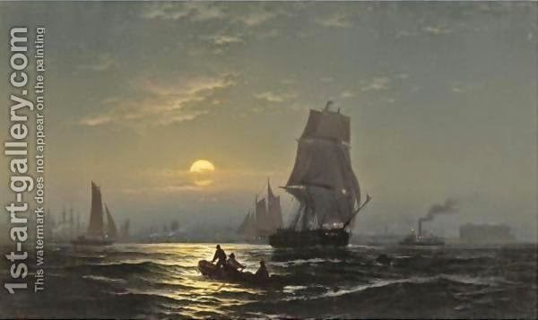

Rosh Hashanah 30 - Innovations of Rabbi Yochanan ben Zakkai
We mentioned how Rabbi Yochanan ben Zakkai outwitted the other Sages regarding the shofar . The Talmud continues with his other innovations.
He established two new laws in order to remember Jerusalem, one about waving the lulav and the other about eating new grain, where the possibility of the Temple being rebuilt any day or night was expressed in practical laws. We discussed these in the Tractate Sukkah, here . This is in the class of important teachings which are repeated in a number of places in the Talmud.
He also re-established accepting New Moon witnesses any time of the day. Initially, this is how the law was, but in the time of the Temple they changed this, so that the order of the sacrifices would not accidentally go awry. Now that there was no Temple any longer, this precaution was not needed, and Rabbi Yochanan repealed the law. This, incidentally, agrees with the rule that even if the original reason for the rule goes away, it still needs a Court to be repealed.
Art: New York Harbor In Moonlight by Edward Moran